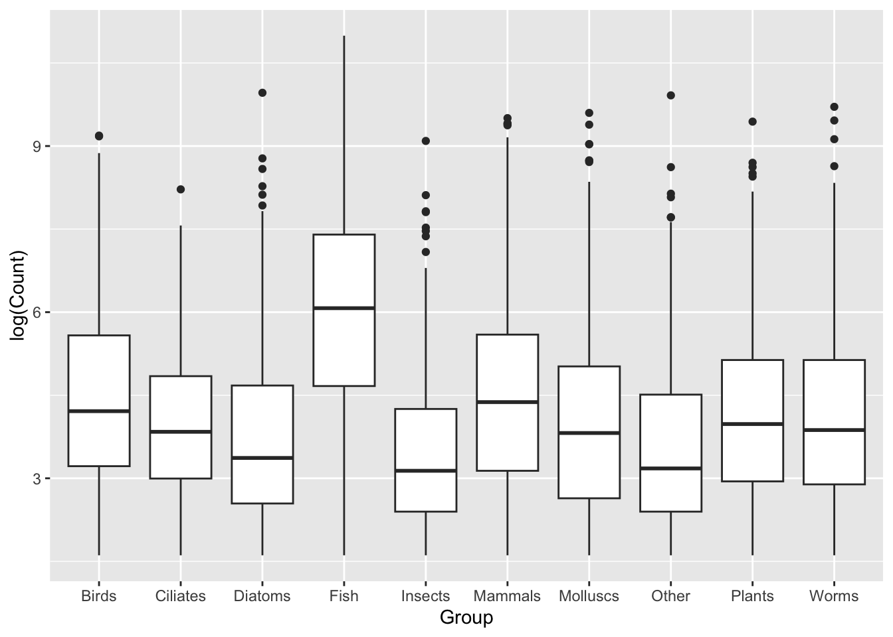
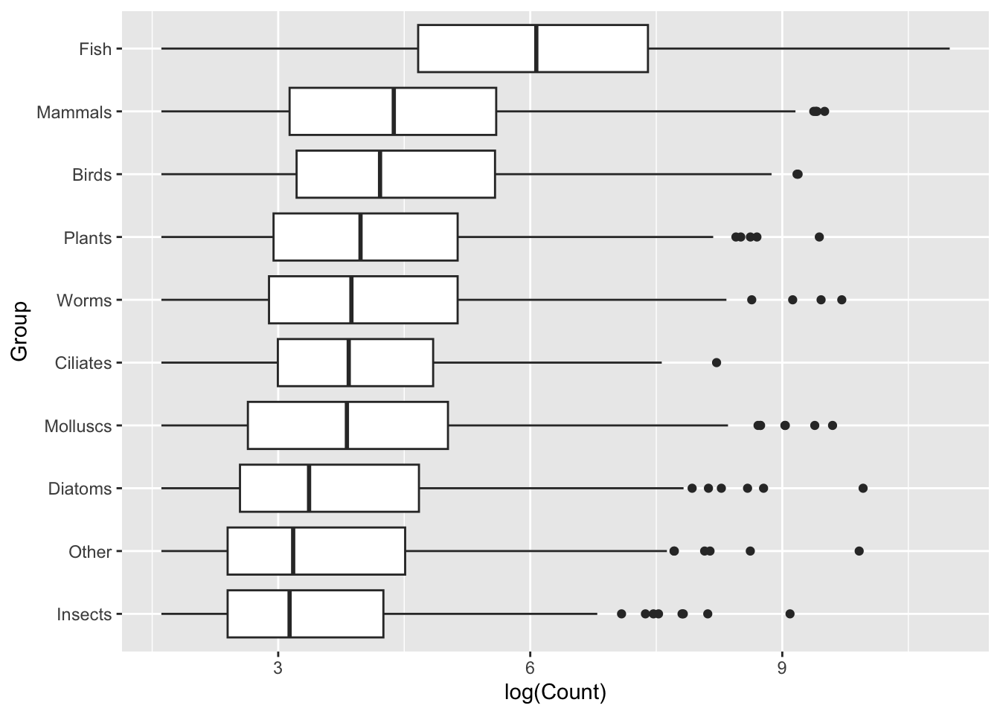
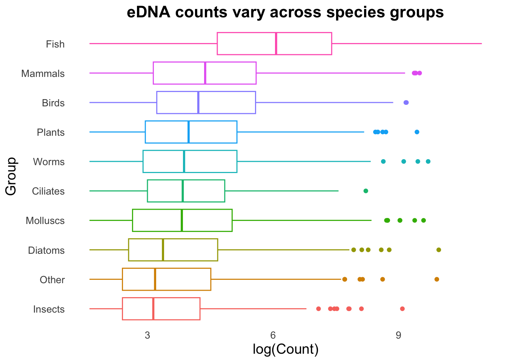
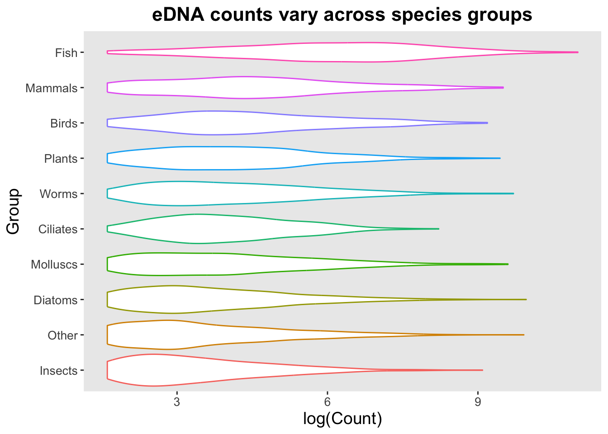
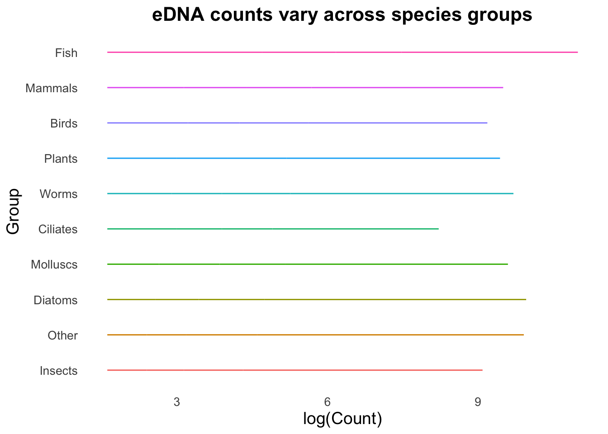
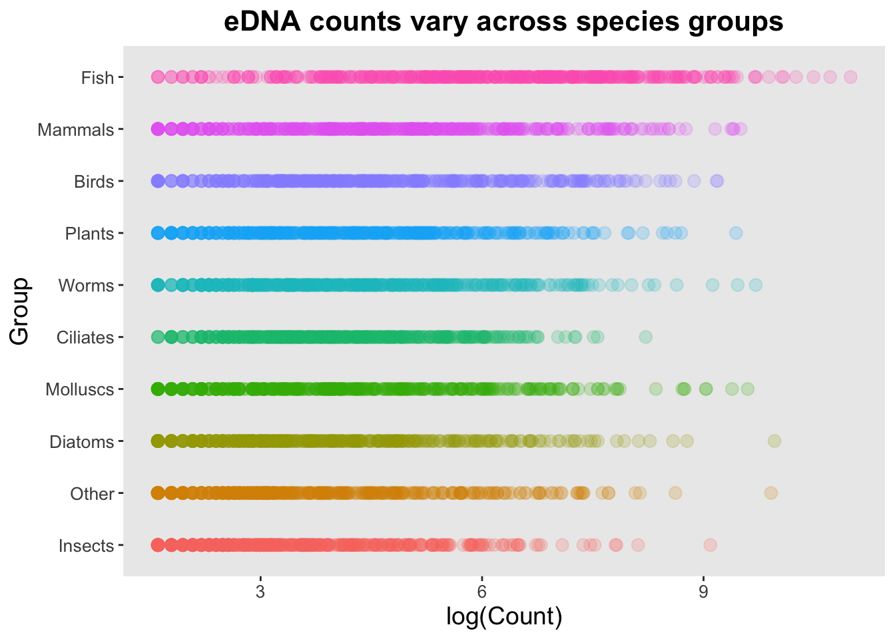
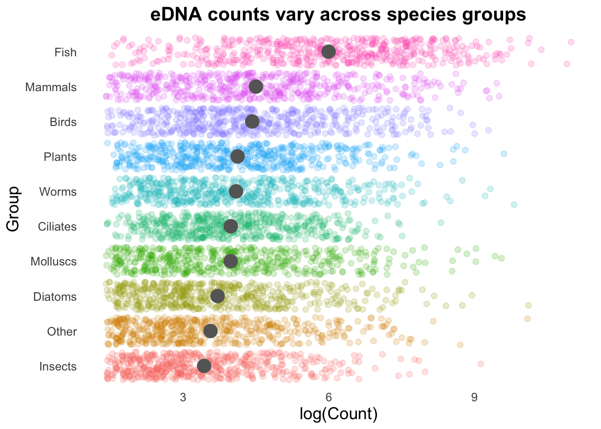
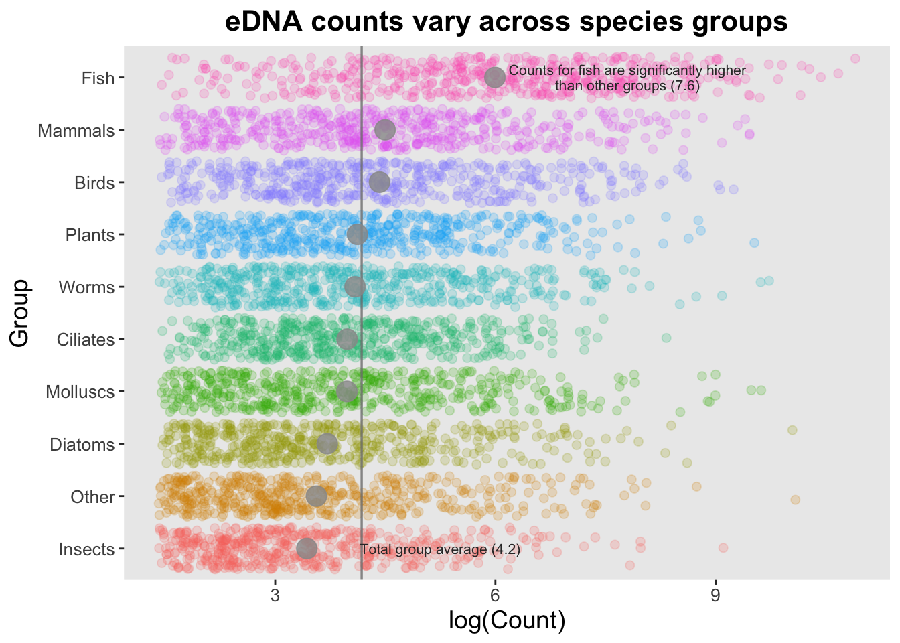

This section follows the outline produced by the very skilled data visualizer Cédric Scherer, modified to work with some example data and updated with my own thoughts and opinions. Cédric’s original tutorial is available here:
# Verify that all groups have 500 observationstop_group_counts |>group_by(Group) |>summarize(observations =n(), .groups ="drop") |>arrange(desc(observations)) |>head()
# A tibble: 6 × 2
Group observations
<chr> <int>
1 Birds 500
2 Ciliates 500
3 Diatoms 500
4 Fish 500
5 Insects 500
6 Mammals 500
Initial plot of the data:
ggplot(data = top_group_counts,mapping =aes(x = Group, y = Count)) +geom_boxplot()
Taking the log of Count data makes this clearer:
ggplot(data = top_group_counts,mapping =aes(x = Group, y =log(Count))) +geom_boxplot()
It’s often worth representing boxplots on a horizontal, rather than vertical, distribution. Let’s switch our axes assignments:
ggplot(data = top_group_counts,mapping =aes(x =log(Count), y = Group)) +geom_boxplot()

Generally we will find that sometimes switching the layout like this can provide us with clearer visualization, sometimes due to labels, sometimes for aesthetics.
Sort the data
Sorted data will be easier to interpret, with a lower cognitive load. Note: we should only sort data if there is no inherent structure - I don’t believe Mammals are inherently ‘higher’ than Fish, so I can sort these groups. Sometimes we will have internal structure, either some kind of hierarchy or grouping (e.g., case vs control) and it is not appropriate to apply sorting.
This is where we need to bring in some of our data transformation skills. This is not the focus of today’s workshop, so we won’t go into this, but we are using a function, fct_reorder(), to re-order the Group variable based on data from the Count variable, where Count is ordered based on median. Easy enough to interpret from the code, I actually didn’t know how to do this myself and used chatGPT to guide me through the process.
ggplot(data = top_group_counts_sorted,mapping =aes(x =log(Count), y = Group)) +geom_boxplot()

This is immediately clearer, with a considerably lower cognitive load. Easily observe that not only does the Fish group have a higher set of Counts, but it seems to break with the trend of the other Groups.
Outliers
In boxplots, outliers are identified as values that are more than 1.5 times the interquartile range above or below the third and first quartile, respectively. In our data these outliers are reasonably numerous. Could be due to inherently variable data, due either to biological or technical reasons, site differences etc., etc.,. Without wanting to make assumptions about the data, we can experiment with visualizations and choose how we want to present this data.
Better visualization
We can now start to focus on the visualization aspects: control plot themes such as labels, titles, spacing. We can explore geoms, and variations on geoms, to determine the best way to present the data. Finally, we can add additional geoms or mappings to display more data.
Theme
Theme is a separate function that controls almost all visual elements of a ggplot. We can fine tune text elements (font size, shape, angle for axis text, create custom labels and titles), the legend (changing the position, setting a background, control the title and content), the ‘panel’ (panel is the background of the plot, in the above cases we have a grid), and many other features.
A useful tip for working with ggplot is to save a set of basic features, such as the data, mapping, and theme to an object which can then be used for plotting with different geoms later. Notice below we use a slightly different format for writing our ggplot function - we omit “data =” and “mapping =”, since those calls are always required and used.
For simplicity we will also reduce our total dataset down to just
groupCounts <-ggplot(top_group_counts_sorted, aes(x =log(Count), y = Group, colour = Group)) +labs(title ="eDNA counts vary across species groups",x ="log(Count)", y ="Group") +theme(legend.position ="none",plot.title =element_text(size =16, face ="bold", hjust =0.5),axis.title =element_text(size =14),axis.text =element_text(size =10),panel.grid =element_blank() ) # Note, no plot is created yet. We will now use the groupCounts object in combination with geom functions to create plots.
We can now trial different geoms to determine which type suits our visualization needs.
groupCounts +geom_boxplot()
groupCounts +geom_violin()

groupCounts +geom_line()

groupCounts +geom_point()

A particularly useful argument with the geom_point() function is alpha, which controls the opacity/transparency of the points. With reduced opacity we can see more clearly when points are placed on top of one another. It is less clear in this example because there are so many data points in a small space, but it’s usefulness will become more apparent shortly.
groupCounts +geom_point(size =3, alpha =0.2)

Combining geoms
Geoms can be combined to create more complex plots by layering one set of information over another.
Note that we’ve included a new argument in geom_boxplot(): “outlier.alpha = 0”. The boxplot geom normally adds points that are considered outliers (greater than 1.5 times the interquartile range above or below the 1st or 3rd quartile). Since these points are going to be represented by the geom_point() function, we need to set outlier.alpha to 0 so that they are functionally invisible (and are therefore not printed twice).
While the above demonstrates the concept of combining geoms, it’s not very functional. The high density of our points on a straight line is creating a strong effect that is over-powering other visualizations. We can change the points from being on a single line to spaced apart with the geom_jitter() function.
# gray40 is a darker gray that is not quite black. I had to test multiple colours to find one that was clearly visible but not overwhelming.
(Even) more geoms
There are some really cool things we can do by combining geoms, and here your imagination and creativity is (probably) the limiting factor rather than ggplot.
Let’s look at how each of our Groups compares to the average (and in this case, we will use mean instead of the median we have been using with our box plots).
First, we will visualize the Group means with the stat_summary function.
Note: here we have selected the size of the stat_summary point as 5, but we could also provide a set of values (e.g., if we had different numbers of observations per group).
Next, we can add the overall mean for these groups as a vertical line:
# Calculate the average number of Counts across all samples. top10_group_avg <- top_group_counts_sorted |>summarize(t10_avg =mean(log(Count))) |>pull(t10_avg)groupCounts +geom_vline(aes(xintercept = top10_group_avg), colour ="gray50", size =0.6) +stat_summary(colour ="gray40",fun = mean, geom ="point", size =5) +geom_jitter(size =2, alpha =0.2, width =0.2)
Warning: Using `size` aesthetic for lines was deprecated in ggplot2 3.4.0.
ℹ Please use `linewidth` instead.

Geom order matters! Note how the summary points (black) are obscured by the coloured points produced by geom_jitter()? We can switch the order so that the jitter points are drawn first, and the summary points placed on top.
If we are trying to highlight the difference between a Group mean and the global mean, this can be amplified by adding text to our image.
groupMeans <- top_group_counts_sorted |>group_by(Group) |>summarise(groupMean =log(mean(Count))) |>pull(groupMean)groupCounts +geom_jitter(size =2, alpha =0.2, width =0.2) +geom_vline(aes(xintercept = top10_group_avg), colour ="gray50", size =0.6, alpha =0.8) +stat_summary(colour ="gray60",fun = mean, geom ="point", size =5, alpha =0.8) +annotate("text", x =7.8, y =10, size =2.8, color ="gray20", lineheight = .9,label = glue::glue("Counts for fish are significantly higher\nthan other groups (7.6)") ) +annotate("text", x =5.25, y =1, size =2.8, color ="gray20",label ="Total group average (4.2)" )

This isn’t necessarily something you would do in many types of plots, but is useful to draw attention to key points (often, e.g., a single gene of interest in a scatter plot).